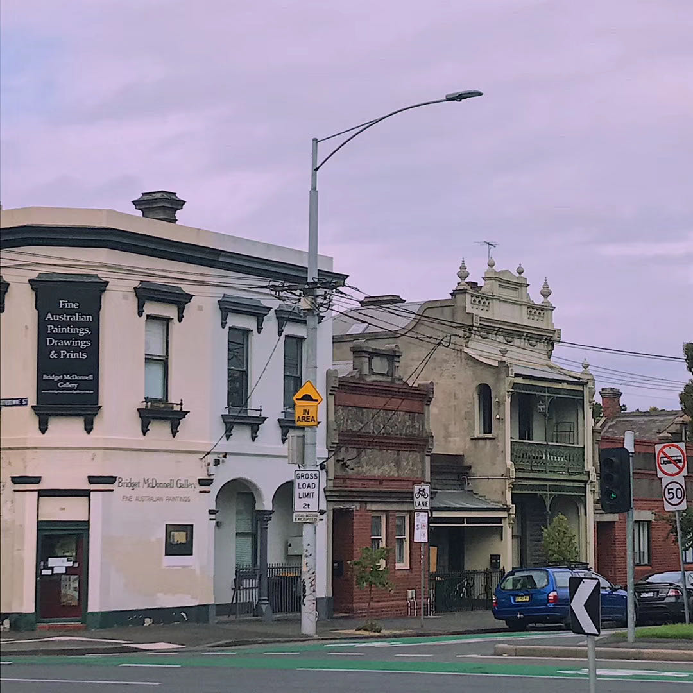
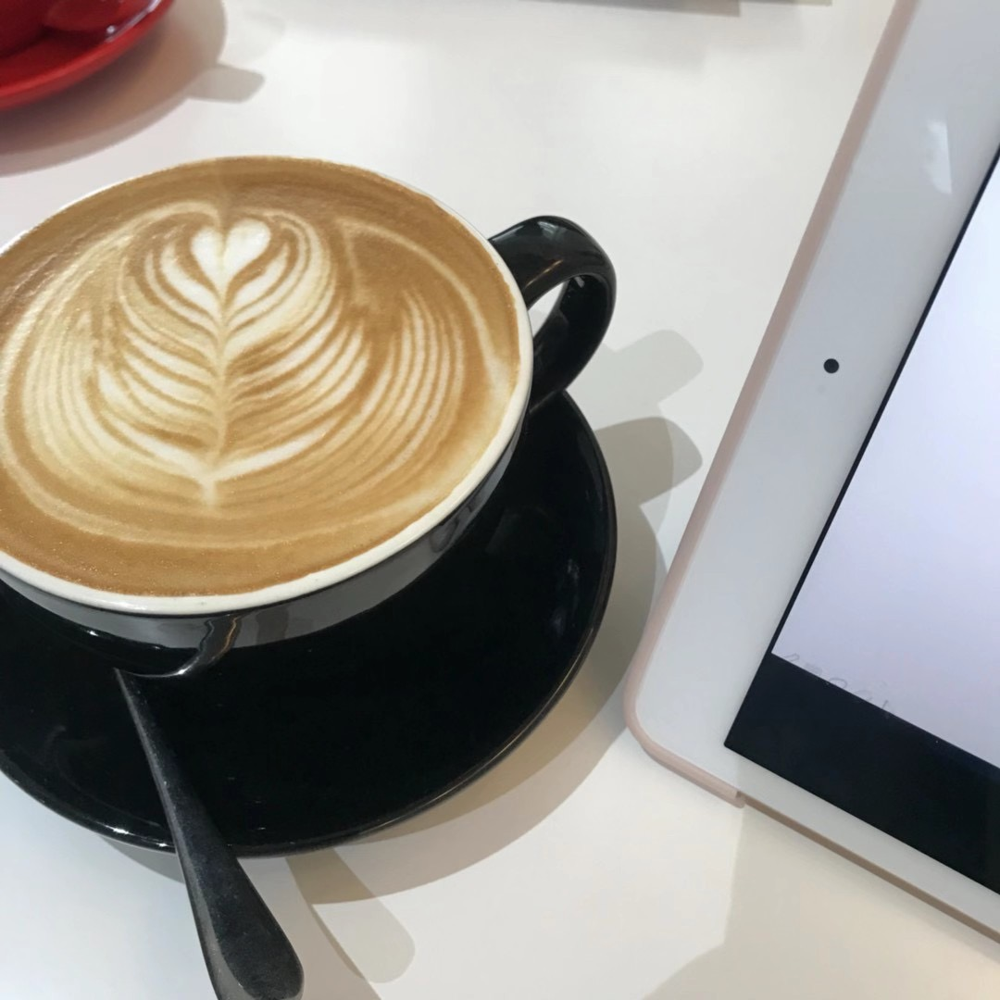
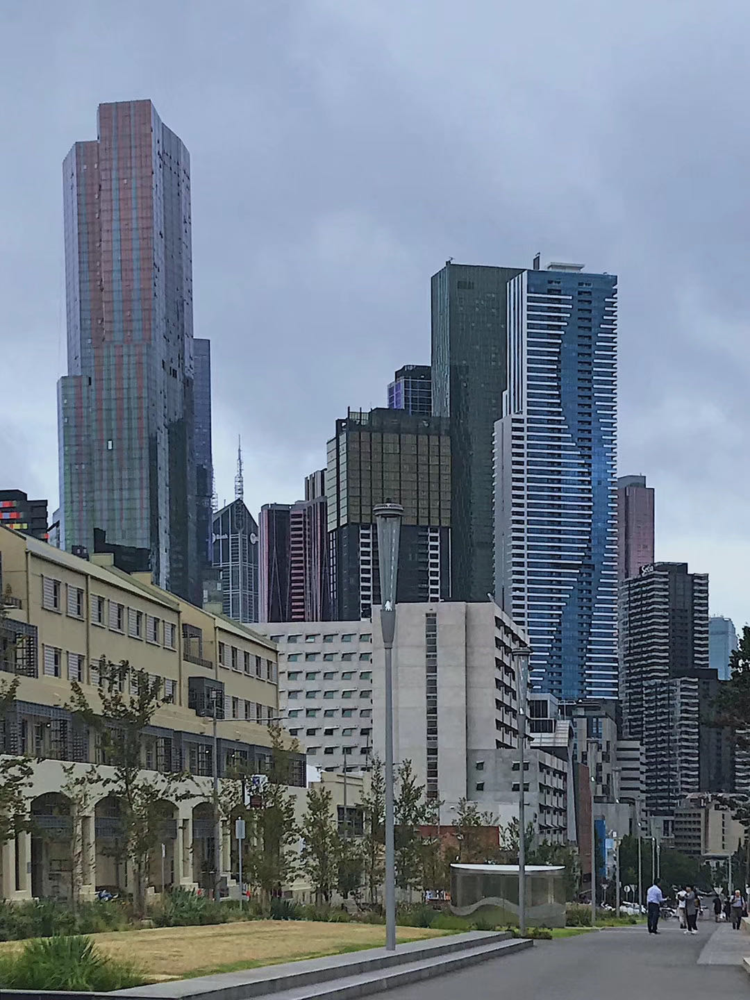

Team Profile

Team Name
IT MAN
Personal information
Shaoguan Ye
My name is Shaoguan Ye, and i have got a English name Logan as Shaoguan is not so friendly to pronounce, and I am now one of the member of IT MAN. The student number of mine is s3658534 and obviously the schooli email is s3658534@rmit.student.edu.au. I came to Australia on 2012 December, the reason that I can remember so clearly is not only because it is my important day, but also back to 2012, there was a prediction that humanity was about to terminated on 25th December. I was feeling a bit stressed when the day has came, but eventually nothing happens, which leaves me not only relaxing but boring. Anyways, as I was born in Guangzhou, where Cantonese is originated, so I can speak both Mandarin and Cantonese since I was a child. And now, as I already lived in Australia for 8 years, I am feeling a bit familiar with English, but maybe not on oral. Also I always have interest in Japanese, as I often watch anime, so I can speak some common things in Japanese. Apparently, I am in the second year of Business information system, however I found myself having more passions and interest in IT instead, even though they are so familiar, but I still want to change to Bachelor of IT this year, hopefully everything works out successfully. About my hobby, it is actually related to one of the things that I am having passion to do----- building a robot model. When I was a kid, I really feel touched while watching the films or anime about robot. Therefore, I now always like to get some robot models that is in a scale of 1:100 or 1:144 to their original sizes to build. I was not very interested in IT stuffs several years ago, back then I was willing to be a biologist. However, I found myself is terrible in Biology when I was in high school, then I change my idea to be a machanical engineer, then I found my physics is awful to be an engineer. When I lost all of my confidence in my study and future, I accidentally saw videos about hackers and robot AI design. I was feeling like I finally find the right things to do, that is IT, or back then I would say programmer. But the only IT skills that I have are those very common things, like turn the PC on and off or launching an app etc.
Zeyi Wu
I am Zeyi Wu, my student number is s3798349. I was born in a small city in Guangdong Province, China. I can speak Mandarin, Cantonese and Chaoshan dialect. Because I just started living in Australia, my English is not very good. Table tennis is one of my hobbies. When I was in university in China, I used to develop projects using javafx and opengl. Since then, I have been interested in developing applications and games. Recently I have been studying unity3d by myself. Now, I am one of the members of IT MAN.
Chenhao Lu
My name is Chenhao Lu, my hometown is Xi 'an, my student number is S3699365. It has been more than a year since I came to Melbourne last June. When I was in middle school, I learned the basic knowledge of computer for some time, but I didn't know too much, because I didn't have much time to learn computer at that time, but I had a strong interest in computer, so I chose to major in computer. About hobbies, I like listening to songs and playing games. When I am bored, I like to watch variety shows to relax myself.
Jiageng Chen
My name is Jiageng Chen and my English name is Kris. However, I am now a member of it man. My student number is s3801520, and my school email is s3801520@rmit.student.edu.au. I came to Melbourne in January 2020, and when I was stepping on this strange land, I met the cov-19, which was disappointing. I had five months of online classes at home, usually only in the computer screen to see lovely students and teachers. During the discussion with the group members, my English feeling is OK. I hope I can learn more through the group discussion. Obviously, I am now a sophomore majoring in information technology. I find that I have more enthusiasm and interest in it, and I hope I can have a good time in IT field. My hobby is to make smart glasses. When I was a kid, when I watched movies or animations about the future, I was very excited. Therefore, I always want to make some advanced intelligent devices and build them according to the industry standard.
Yukun Li
My name is Yukun LI. Also, feels free to call me Michael. I am from China and came to Australia in November 2017 when I was 15 years old. After the half of years study in language school and three years of high school education, now I become a student of RMIT. Also I feel happy to choose IT. As a number of our group—IT men. My student number is: s3845821 and my school email is s3845821@rmit.student.edu.au happy to make more friends. As I introduce in my personal profile, my favourite sport is soccer, I am a loyal fan of Barcelona football club. Messi is my idol and I fall in love with him when I saw his unbelievable skill in 2014 world cup. Also I’m interesting in computer games such as league of legends. So I usually image if a can product one game in the future. But I never go through the area of the IT and no deep research for it. Therefore, IT is just a high interest and a lot of areas in my eyes. No basiclly IT experience yet but I hope I can find a job that I like in this IT areas. Then to be a real IT man.
Group Processes
Our group cooperated perfectly in homework 2. Because of first group, we will discuss together in each of our members are analyzed on the study of the advantages and disadvantages of, who is on the one hand, a good strong who is responsible for that part and then on to help the poorer party, so we are learning to reach the effect of complementary, ACTS as is handy and and our group members are all very optimistic to study actively, is listening in class to answer the teacher's questions actively, share us after class, we often get together to discuss their understanding of the content of the spoken, and the content of what we learn is multi-layered meanings, but also to deepen the understanding. However, in A2, all our team members think there is still a lot of room for improvement. In A3, we will improve the quality of our homework according to the teacher's feedback. In terms of time arrangement, we need to make full use of the time after class to discuss our homework. I hope we break new ground in A3.
Career Plans
| Member |
Jiageng Chen |
Shaoguan Ye |
Yukun LI |
Chenhao Lu |
Zeyi Wu |
| Ideal jobs |
Information Security Network Engineer |
Network Engineer |
Machine learning engineer |
Gameplay engineer |
Game engineer |
| Salary |
$120000-$200000 |
$70000-$100000 |
$72000-$135000 |
$40000-$130000 |
$47000-$100000 |
| Educational background |
Master degree |
Bachelor graduated |
At least the Bachelor graduated |
Bachelor’s degree |
Bachelor graduated |
| Required skills |
Previous experience with IT security. Good understanding of regulations relating to technology risk, data privacy and security compliance; Proven track record and experience in supporting information security devices and procedures; High level of personal integrity, as well as the ability to professionally handle confidential matters; Good analytical skills, the ability to manage multiple tasks, as well as the ability to work well in a demanding, dynamic environment and meet overall objectives; Experience and ability to working effectively with industry partners and suppliers; Ability to perform detailed design documentation when required. |
Extensive experience with CISCO networks, switching,server, routing and firewalls. Well using Oracle DB,microsoft windows, MS SQL Server. Linux. Communication skills. |
Neural networks and machine learning algorithms. High education level in math and use of the computer skills. use Python or R as their primary programming language |
Proficient in Microsoft C, demonstrable knowledge of TCP/IP, sockets and network programming, interest in server-side architectures and back-end stack development, ability to work in a highly collaborative team environment. |
Rich knowledge about game AI. Well using C or C++. |
| Experience |
Worked with Fortinet/Fortigate firewalls in the past. Citrix Netscalers and/ or F5 experience. |
Prior experience as a Level 3 Network Engineer. Hold a CCNP certification. |
Most qualified ML engineers have experience in working in a specific sub-field. These could be computer vision, natural language processing, robotics, or deep learning. |
Experience in Python, Linux / Unix sever environment experience. |
Experience in game development using commercial engines such as Unity and Unreal Engine 4. Possess PlayStation3, PlayStation4, Xbox 360, Xbox One game development experience. |
| Career Plan |
Graduate school. Find a job related to the Internet, where I can learn from people in the industry to gain more knowledge of the Internet. Obtained the Network Security Engineer certificate. It is internationally certified. Then I would think I was ready to become a network security engineer and work for Alibaba. |
Bachelor graduated. Look for a job that is relavant with IT and study inside and gainingmore of networking knowledge. Get level 3 network engineer certification. Get CCNP certification. Then I would think I am ready to be a network engineer and work for someone. |
The first step in the career plan will definitely be the finish university study and get enough knowledge to find and be employed by company that I look for. Then try to hard work and receive enough work experience for the Machine learning engineer. |
Obtain the appropriate bachelor's degree certificate. I will convert my written knowledge into practical knowledge through internship and accumulate corresponding work experience. |
To get the enough experince, I plan to go for an internship in an IT company after my bachelor's degree. After that, I will consider trying to apply for my ideal job. |
Zeyi Wu:
Comparing the career plans of other people in the team with my career plans, I found some similarities. Most of my teammates want to improve themselves by working in other companies for several years. This is definitely a good way to gain experience in developing IT projects. Working in a real workplace can directly participate in the development of IT projects and provide opportunities to access elites in the IT field. In addition, I have seen some team members decide to obtain a IT certificate, which is also a great way to improve their skills.
Jiageng Chen:
One person in our group wants to be a network engineer, two people want to be a game engineer, and one wants to be a mechanical learning engineer. They say you have to get a bachelor's degree in information technology to have a good chance, but I think you need to finish a master's degree. And not just to achieve our goals. However, the reality is very cruel, and sometimes it doesn't go the way we expect. So I need to have more IT skills to achieve my goals.
Shaoguan Ye:
Two of us want to be network engineers, two want to be gameplay engineers, and one wants to be mechine learning engineer. We all have to get a bachelor's degree in order to move forward. We can see that when we get our bachelor's degree, we all want to get some work experience in IT first, instead of just applying to do what we want to do. Of course, the experience we want to acquire also varies according to what we want to do. After gaining some IT experience, we should get relevant professional certificates, and then we are qualified to apply for the job we want to do.
Yukun Li:
Comparing to our different career plans and our ideal jobs, the similarity is that we all want to find a job related to it, and we all have similar degrees. He is still in the undergraduate stage and has not graduated yet. So the first plan is to finish college and get an undergraduate degree. By finishing our university, we purpose to get some relative jobs in IT areas. These are necessary progress for us to obtain enough work experience in order to get our ideal job in the next career. Be honestly, there are not too much difference for us after a little of conversation between group meeting. I even don’t have a perfect goal for my future work before we have some of discussion.
Chenhao Lu:
Our dream jobs are the same and different, but the first step to getting there is the same. We all have to get the appropriate bachelor's degree first. That's the premise of everything. Secondly, after we get our bachelor's degree, no matter our ideal job is the same or not, we all want to get some internship opportunities to gain work experience. With the corresponding written knowledge and work internship experience, we can better obtain our ideal job.
Tools

Meetings
24/09/20 Discuss the project Idea
03/10/20 Discuss the project Idea，and set up some milestone
06/10/20 Discuss and assign work for project part and project idea
09/10/20 Review the project idea，ask some advices for project idea by sending an email to Anthony
12/10/20 Review the whole assignment and start to complete some documentation
17/10/20 Review the whole assignment，finish some important works，like Set up a website.
Prototype: figma
Project Description
In assignment 2, our team's project is a second-hand goods trading website. We talked about a lot of features together. But the teacher's feedback to A2 is not perfect. Because our project is very extensive, did not grasp a point, the teacher thinks that this will lead to our website will do not do well. So each of us wants some other types of personal projects, like home robots, shopping platforms and so on. Finally, we decided to change to a comprehensive multi-functional learning platform app on the basis of A2's website. We keep the second-hand commodity trading function, and add learning live broadcast, learning forum, famous teacher lecture or question search function. These functions are in line with the needs of users to design. The decision was made by our group after two weeks of discussion and a lot of time with Anthony to discuss the revised plan. And our team members are very interested in making a very useful software for students in Australia and even around the world. Because our team members are college students and future professional IT technicians, and we have not found this multi-functional software in Australia. If this software is produced, it will cause a great sensation. It will also help the Australian academic community, the surrounding college students and themselves. Even after this software is produced, it is helpful for us to develop in IT industry. But we are freshmen, there may be some obstacles in programming, we will try to overcome them.
This is an Internet era. Touch commerce is the fastest growing mode in the wave of technological development, which has caused a huge blow to many offline shops. According to "5 technology trends you need to know to work in any industry" states that this is one of the biggest things to hit eCommerce in recent years with purchases of this type expected to increase by 150% this year alone and retailers in almost every industry anticipating an increase in sales directly related to this new technology. Therefore, our group is very hopeful for the development prospect of our software, because we have taken advantage of the rapid development of the Internet, recording to a recent study, mobile app users tend to be young, have above average education and income levels, and remain mostly in urban or suburban areas (machackova, H., Smahel, D. and elavsky, S., 2017). This age group （student ）has also demonstrated that they are well versed in terms of internet and smartphone usage which is essential to the development of our solution.
Finally, after completing this project, our team members should know what their career development path is. Because in this project, everyone's role is different. Everyone is responsible for different parts and contributing to our products. When they come into contact with various professions in the IT field, they will encounter some problems, and they will be easier to solve these problems, so as to get the appreciation of the boss. This is a very good thing.
Reference:
1. 5 Technology Trends You Need to Know to Work in Any Industry (2019). Available at: https://www.wayup.com/guide/1-5-technology-trends-need-know-work-industry/ (Accessed: 13 October 2020).
2. App Store. n.d. Lifesum: Diet & Macro Tracker. [online] Available at:https://apps.apple.com/us/app/lifesum-diet-macro-tracker/id286906691 [Accessed 1 April 2020].
Overview
Topic
Our project is to build a mobile app, which can allow users discuss things only about academic knowledge in it. The core function is the academic forum part, users are free to create discussion, and other users can participate in discussions to discuss learning and progress together. And particular section will be created, like math, history etc. and each discussion will be contained into the topic that fits. We also come up with some interesting idea to make the app more attractive. For example, users can scan with their smart phones or type in questions they can't solve, and search for the similar discussion or the similar problems in our question bank; Users can buy second hand books in our app, and they can also post books they do not need anymore on sale; Users can create study group, which the group members can discuss a particular project inside; Users can stream in our app, and other users can join in to see what is going on, like streamer may stream solving the mathematic question, and others can help him or something; We will also invite some academic professional to lecture online; Limited by the technical capabilities of our group, we only plan to make mobile applications at this stage. Of course, we do not rule out that we will choose to develop a web version when we get more time in the future.
What we want is not only to do this project well, but also to extend it to every student or person in need of academic help. Our team knows how important it is to have a place to solve academic problems with you, so we will try our best to come up with more good ideas to help users improve. Before we thought of this idea, our team members were not very interested in this project, they just wanted to deal with things casually. However, the idea that we have come up with through various investigations and searches raises our great interest and motivation, because we all associate our experience and we want to be helped when we don't understand. Holding the mood that as many people as possible can no longer have this worry, we will use our best efforts to improve the project. We believe that as long as this project can be successfully completed, it will certainly help the current academic environment.
Motivation
In the beginning, we didn't want to do the current learning forum project, but we wanted to do the more complex Robot project. However, it turned out that our knowledge base didn't allow us to undertake such a complex project, so we opted for an improved learning forum instead. We did not just do what we thought, but found that there are not many learning software in the market after doing various online surveys, so we thought of expanding the second-hand book trading platform into a forum where we can both trade and discuss learning. In addition, our team members often encounter unsolvable academic problems and often find it difficult to find a solution. Therefore, this platform can solve such problems, so our team members all agree with this idea. There is no doubt that this project will have great potential. There are so many students now that there are not a few people who want a professional platform to discuss academic issues. Therefore, the problem of user group does not need to be considered.
Landscape
Products similar to our projects are like the famous reddit and NGA, which focuses on making game forums. Of course, there are certainly more similar products in the world that we may not know about, but the products that have caused the greatest impact on our team must be these two products, also from which we get our inspiration. Of course, the above is just about the forum. It is the two products that inspired us, but in the second-hand book trading, we are inspired by the famous eBay and Taobao. And our functions will be very similar, but in this project, we will pay more attention to the learning forum. Most of the inspiration for the idea of creating a discussion platform came from reddit, so at this point, our project will be similar to reddit. However, the idea of dividing different sections in the discussion platform was inspired by NGA, so it will be similar to Nga. These are just some functional similarities. In our opinion, the biggest difference between our projects and these products is our designing concept. We are a product that focuses on learning. Unlike reddit, it can discuss all kinds of interesting things. Unlike Nga. It only talks about games. Even unlike eBay, which can only buy and sale. We only discuss academic topics. This is also our biggest competition point and flash point.
Project Idea
Aims
Our group project's main goal is to provide convenience for people's academic exchanges, and this is different from some academic BBS is people not only can choose what you want in the app, and the relative professional personage to conduct academic exchanges, the second goal is to help people solve the problems in the study, people can take in the problems in the academic publishing in the app, seek others' help, or find a similar problem to help you solve the problem. This is more efficient than people looking for information on some search engines. The third goal is to establish a second-hand book trading platform, where people can exchange books on the app, sell books they don't want or buy books they want. Especially for students, it can reduce the cost of academic books, and selling unused books also has the effect of waste utilization. This app provides a relatively professional platform for people, especially students, to communicate academically and help them solve their learning problems.
Among these goals, the main goal of our project is to build community functions. This is also the main purpose of our project, which is to facilitate more professional academic communication among users. Users can set up communication communities according to their own requirements, publish problems they encounter in learning, discuss problems or academic knowledge with others, and post advertisements for books they want or books they want to sell in the community, so as to trade second-hand books.
Plans and Progress
It is so important so create a wonderful plan before we start our project progress in previous weeks. That’s necessary for us to organize some of conversation and chat between each other through the Microsoft Teams. I remember we start discussing on week 7 and the first plan for this Assignment is so interesting that I cannot forget now which is the House robot. It is a kind of artificial intelligent and we thought it will be great in the future, especially after five or six years. Because it needs to be researched in a deeply ways and should attach importance to itself. However, it is so complex for us and after we email to our tutor, his finally reply could push us to change idea that does not mature enough. So we must spend more time to discuss our project and built another plan to start this work. It spent us a lot of time, up to more than two weeks, I think. As we can say, it is a hard progress before we decide the true project in the end. Once we made our conversation as usual. Suddenly, some of teammate said, “why don’t we create one application like Microsoft Teams which contain more functions than Teams.” “wow, that’s a great idea!” this is the opinion of all group members in our group. Just go for it and no more waiting, we discussed through this idea. During the discussion, we find there are not too many similar applications like Microsoft teams. So it is a scarce thing and should be needed in the market. The demand of this app will be more and more if we create a wonderful application to fit users such as students and group guys. Fortunately, we cover this dead-end and find a new exit with the “bright light”. Now, we must think about what the “useful function” are compare to the Microsoft Teams and how to attract more users within its works. Some of ideas born. Refer to “detail description and Topic” buttons, there are meeting, secondhand books-sale and purchase, search similar academic topic and solve problems by scan it. Everyone uses this app can chat their idea and problem that they meet and research. We believe no question unable to be solved by group-work. Trust these applications will be popular after it were produced. Now, we leave this dead-end and arrive at another entrance that should be the longer progress to find exit. In other words, we should distribute it to each people and start to work out each part of this project through different ways. In details, looking at the Roles that we explain what these ways are. Some of problems come out again and new challenge has been arising. For example, we don’t know how to create the prototype, which the model of this application and the interface of the website if we want to build. It is a new progress which need to have a overall discussion to fix them. So that means we must learn much of relative knowledge about those topics. At the first, we all don’t know how to create prototype, because all of member in our group don’t have any relative study in design, act and so on. We only know basically IT knowledge, so it is hard for us to fix this question. Fortunately, some of member in our group have the User-centered design and it teaches them a bit of knowledge about design the prototype of application. Even they need to finish some similar works in the next week. So it is lucky. We can fix this problem out. In detail, our User Interface Designer Zeyi, he bears this role with the hard work and learn new knowledge from UCD. He tells us it can be done in the Figma which one website can design your individual interface of different things. Whatever the application or website model. Furthermore, we also need to talk about the risk and the skill requirements of this application. (also, can have a deeply check the Risk and Skill button). Those are important information that we need to pay our attention to research. Moreover, those are information that most if we were to hand this project over at the end of the semester to a new team to complete the job. At the end of the week 12, we done all of paperwork and put all of these in GitHub basis on the requirement. By the way, we attract attention to this step caused we lose most of marks in this part (prestation) in the last Assignment. So we don’t want to make this mistake again. Creating a website and recording our meetings of these week. Finally, finish our individual feedback on the Sparkplus and group reflection. Above are the whole plan and progress of this work. These could be memorable within lot of fun and laborious
Roles
In order to create one perfect project, not only a wonderful plan is necessary, but the reasonable distributions of the work also important. As we can know, there are so many roles we can allocate. For example, the Boss—the person who organize whole activities as the leader. His work is like pushing us to go work and finish it in high efficiency. Always put pressure on us appropriately, so that we can provide a better result by working in individual area. As his “staff”, we have to give feedback to our boss. Main job is Organizing meetings and communications in our group. Distributing similar quality of works to each people and give the help to us. above are Chenhao’s role.
The lead developer of this project is Shaoguan, who make this idea first and are responsibility for main function development. A lot of ideas and opinions were created by him and always give us different way to go through. He is the person who use the flashlight to find the exit when we face the dead-end. As the lead developer, his main work is testing our user and collect feedback then make some new idea within a brainstorm. Telling us which part should be improved and how to make it better.
The recorder and personnel management of this project is Yukun, who responsibility for the record all progress of our project. How does it start, when we finish it, what problems we solve, what kinds of dead-end that we meet and so on, because each person has their individual work so then may not understand others’ work and what’s going on? He should be the person who understand all of people’s progress and help them to reduce press as far as possible. If the skill and technique department need help, he has to put more human resources on solving their questions.
The Technical Designer is Jiageng, he’s role is providing any technical support in the developing of our app. Such as Java knowledge and database understanding. Moreover, Scope and Limits is his responsibility. As we can say, the upper and lower limits of the software are up to him.
User Interface Designer should be Zeyi, he creates the GitHub and website for us and design the interface of this project. Make it looks like conspicuous when user choose it. By using many tools to design Internal and external functions of our project.
Scope and Limits
We need to create a fully functional application in 10 weeks or something like that. Because the core functions of our software are learning forum, second-hand book trading platform, live broadcast and so on. These all need each backstage system to cooperate to be able to carry on. The implementation of a lot of code requires our team members to spend a lot of time learning, and I don't think we can finish it in ten weeks. However, we felt that our code capabilities were not up to industry level and that there were a lot of things we couldn't handle. Our team members all think that we can implement some basic functions of the app. For example, we want to implement part of the learning forum, where every registered user can post and comment, you can even reply to other users. However, adding friends and friends' private chats is not possible because of the database processing involved.
Tools and Technologies
Regarding the tools and techniques required to develop this project, we need to use tools commonly used in the industry. First of all, we need intellij IDEA Ultimate version: 2020.2.3 and Appcode version 2020.2 to build Android and IOS versions of APP respectively. Besides, we need a PhotoShop V21.2.3 to draw materials. We need to pay for those development tools regularly to obtain licenses. In order to store user data and forum data, we need a database. Here, we will rent a cloud database on Google Cloud. They provide Cloud Code for IntelliJ, which will facilitate our development and management. Both Jiageng and Zeyi have experience in using java to develop programs in Intellij, which will help our project to a certain extent.
Testing
Because our project is geared towards a large number of users, we will want to hear more of the users, not just the opinions of our group, so we will focus more on user testing and get feedback from them to know if we have succeeded. Beforehand we will make a rough wireframe in advance to determine our design philosophy. When our design concept has been initially determined, we will make a prototype of our project on Figma. This prototype will contain our core program, which is the forum function. After making the prototype, we will start our first user test. Our user group will focus on university students and scholars, and also need to have a certain amount of experience in using smart applications. This preliminary test will be limited to about 10 people, because this is not a finished product, we just need to know if we are in the right development direction. When our preliminary tests are completed, we believe that we can start developing our products. Because our product will have many functions, we will complete it step by step. Every time we implement a function, we will start a user test to test whether our function is successful. Of course, Each test will be tested on different platforms according to user needs, such as Android and IOS. And users will still look for among college students and scholars, and still need a certain amount of experience in using smart product. When all the functions are completed, we plan to conduct the last user test before it publish to test whether our complete product is successful.
Timeframe
| Name |
Zeyi Wu |
Jiageng Chen |
Chenhao Lu |
Shaoguan Ye |
Yukun LI |
| Week 7 |
Discussion on the project idea |
Discuss on the project idea |
Discussion project idea |
Discussion on project idea, come up with a project idea about robot but rejected. |
Discussion on project idea start with some fashion idea but it not up to standard. |
| Week 8 |
Discussion on the project idea |
Discuss on the project idea |
Discuss on the project idea |
Come up with a prototype idea of current project |
Go on the discussion project idea and point out some issue |
| Week 9 |
Confirm the new project idea |
Confirm the new project idea |
Determine the idea |
Marketing research for the project and sending email to the tutor to seek help with project idea. |
Waiting for the confirm of our group project idea. |
| Week 10 |
Improve the new idea and assign work. |
Complete New idea and assign work |
Refine the idea and decide the work of each team member |
Confirm project idea with the tutor by changing detail. |
Confirm finally project idea by tutor and start to allocate works |
| Week 11 |
Design the wireframe of the application and figure out the tools and techniques we need in the new project. |
Presume that the project will run into some risks |
Ask questions and solve questions |
Separating works for each one of the members but with some questions that needs to ask the tutor. I am in responsible with Testing and the Overview part. |
Start to do our individual work by each person and keep talking about our problem that we face to |
| Week 12 |
Working in the actual prototype. |
Finishing in the Project Description. And Scope and Limits.At least we check all thing right and start to do our project. |
Working in the detailed description aims and group processes and communications. |
After solving all the questions with the tutor, finally confirm works for each one, and start writing report. Getting started with Overview and Testing. |
Solving all problems after meeting with tutor and everyone finish their work. Record each week’s progress. |
| Week 13 |
Report is done by last week, start preparing the presentation of our project to potential clients. |
Prepare to show our project to our potential clients. |
Prepare to presentation to potential clients. |
Report is done by last week, start preparing the presentation of our project to potential clients. |
Report is done by last week, start preparing the presentation of our project to potential clients. |
| Week 14 |
Thinking and design the style of the UI of the App. |
I go to learn techniques that the back end needed, such as normal notification between the database and the system. |
Consider key functions in our program |
Start making up a survey of the project for potential users. |
After finishing previous work for this project. I start to organize all of group with different offices. Prepare the plan |
| Week 15 |
Discuss and improve UI design with others, draw materials for UI. |
Use the Java programming language for the basic function |
Organize group meetings to exchange their findings and ideas. |
Analyze the data obtained from the results of the survey and redirecting the design features. |
Rent one office for the whole group to develop this project and move in. |
| Week 16 |
Draw materials for the forum function and do the front-end work. |
Use Java programming language to achieve the learning forum function |
Improve own work according to the meeting |
Collect competitive application on the market and analyze it, extract the essence and remove the bad |
Ensure everyone’s roles in this company and play their roles for the development of our app. |
| Week 17 |
Draw materials for the transaction function and do the front-end work. |
The Java programming language is used to implement the second-hand book transaction function |
Organize meetings and exchange work content and progress |
Making up a remote controll survey for our application prototype to see what users think of our prototype. |
Base on the requirement of the skills and technique, have to employment some of people within require skill. |
| Week 18 |
Improve the front-end part of the App. |
Complete the code on the APP and reduce bugs |
Help to do market research to understand the satisfaction of each function in the program |
Analyze feedback from users and share it with team members to further improve our application |
This week we will need to employ some people with skill that fix our InternetConnect issue. |
| Week 19 |
Interface with back end programmers |
Interface with front end programmers |
Share the research results with other team member |
Help with front end programmers |
This week we will need to employ some people with skill that database. |
| Week 20 |
Internal test whether the APP can run in various mobile phone systems |
Internal test whether the APP can run in various mobile phone systems |
Organize meetings to collect program test results. |
Start making up a final survey before publishing the application. |
Ask some people to do the internal test for the app running. |
| Week 21 |
Debug the app and find problems. |
Collect some software problem |
Share the problems in the test with the team members, make modification and improvement in time. |
Analyzing user feedback, helping the debug the app and finding problems. |
By finishing the last but important step, make sure again each office working correctly. |
| Week 22 |
The application should be completed. |
If there's no problem, get it out there |
Publish apps on all mobile platforms. |
Application is ready to publish and start preparing for a new survey for the current users of published application. |
Our application will be made true and can be used in the market |
Risks
The theme of our group is to develop a multifunctional software about learning. In the process of designing this software, I probably estimated that these risks would perplex the development process of this project. First, I use different programming languages from my team members. I use Java, but some members learn C + +. But this software will be easier to implement with Java language, so my team members need to relearn Java, which will take some time. Moreover, when using different programming languages, my team members need to adapt to some software to better design programs. These problems are very time-consuming, which is a bad risk for our project. Second, we need to consider the risk of the feasibility of the app, because this app requires a large number of back-end systems to study the API and other required systems. Among them, we will encounter incompatibility between these systems, we need time to check, and to realize that these systems can work with each other. Thirdly, we need to consider that when there are many users of this app, we need to solve the problem of high concurrency (that is, how to solve the problem of tens of thousands of users accessing the server at the same time, so as not to make the program crash). This is very important because it will affect the user experience. The third point is that we may have some risks in the usability of the software, because the base number of the groups our team is facing is relatively small, so we can not fully consider the use feeling of everyone, which will lead to the deviation of our thinking and direction in software design. We need to readjust our design ideas. The fourth risk is that we will find that there are few types of software on the market, and we can hardly get a lot of ideas from them and lack a lot of documentation. We need to spend time redesigning some features.
Group processes and communications
Our group usually communicates in two ways. We will use the meeting function in Microsoft Team for video and voice conferencing to identify some important parts of our Team. For example, the general direction of the team project, the division of labor among team members, and the sharing of team members' opinions. In addition, our group will communicate in WeChat group through the function of WeChat group chat. In the WeChat group, the group mainly USES text communication, mainly to communicate some problems encountered in working alone and to determine the time of the next video voice meeting. Usually our video conferencing is 2-3 times a week. Because there is no language barrier in our group, we communicate very efficiently. Everyone in the group was very cooperative and actively communicated with each other about the assignment. In addition, the communication atmosphere in our group was also very good. During the meeting, we were not too serious, and we all actively put forward our own opinions and listened to others' opinions. Finally, our group communication went very smoothly.
Skills and Jobs

First, in order to build the app, we need a Mobile architect who is proficient in Android and IOS application development. He/she needs to be proficient in using INTELLIJ to develop APP. He/she is responsible for what technology the product uses, formulating front-end and back-end interaction rules, whether to use a framework, what framework to use, how to use the framework, and design interfaces. Because he will determine the development details of the entire project, he needs a certain degree of leadership to assign and manage other positions. He/she also should be willing to communicate with other employees and have certain experience in teamwork.
The second one should be a UI designer. Skills required: android design specifications, material design specifications, Apple design specifications, color matching, font selection, etc. Innovative thinking is necessary for this position. In addition, this person may need to provide some art materials and resources. Of course, proper teamwork experience is also needed.
The third one should be an Android/IOS programmer. This person needs to have more than one year of APP development experience and is willing to follow the arrangements of the architect.
The last one should be an art engineer. This person must be proficient in using art design tools such as PS and he/she needs to make art materials needed by the app. In addition, this person must be willing to communicate and cooperate with the UI designer.
Reflection

Jiageng Chen:
Before handing in my homework, I thought I had done a good job. I had many meetings with my team members, and we actively discussed and analyzed the problems of homework. We will set some dates to specify when each section will be completed. I think it will greatly improve our efficiency. When designing the project, my team members and I took A1 and A2 into consideration. Teachers' Suggestions and team members gave me some ideas in the project, which made my thinking clearer and improved our team's project. What's more, we will ask the tutor about the questions we don't understand by email. That makes our progress very smooth. So I think it's a great honor for me to have such good company. But I found that there are still some areas for improvement in our group. First of all, before the beginning of the previous meeting, my team members had some issues that made the meeting unable to proceed normally, which I think would affect the quality of our meeting, because face-to-face communication can enhance our feelings and understand each other's ideas, but we all solved this problem through communication. During this assignment, I found that all my team members wanted to put a lot of effort into this project, which surprised me. I think the project of our group will develop very well.
Chenhao Lu:
In this group work, our team members cooperated as actively as A2. From the initial assignment to later group meetings, each member is actively involved in the work. The only thing that didn't go well was that we initially made a simple group work plan, but with the help of the teacher, we found that our first idea didn't work out. We reorganized meetings, expressed our views, redefined a new idea, and redistributed our work. So, the progress of our group is much slower than that of other groups. Surprisingly, we formed a tacit understanding in the process of A2, so after we determined the idea, we assigned the task quickly, and everyone completed his task quickly. I think we communicate more than A2 does. In A2, we only communicated in each meeting, but this time we not only communicated in the meeting, but also used the WeChat group to communicate the problems in the homework, which made our A3 very smooth.
Shaoguan Ye:
Through the whole semester, I can feel our group is performing better and better. I feel that the most successful aspect of our group is communication. As always, we are good at presenting opinions and actively discussing A3, which makes our A3 go very well even if we start late. Speaking of the areas that can be improved, I think there are several points that need to be improved. First of all, because most of the time we communicate in Wechat, we often forget that we need to record our meeting. Every time, a certain team member suddenly thinks of meeting, and then calls the rest of the team members to go online quickly. Even once or twice we didn't record the meeting. I think this is what we need to pay attention to in the future, because this is one of the very important requirements. Another point is that even though we all communicate actively, I think we need to be more positive. Because in fact, each time there will be one or two members of the team are silent. I think it is very important that we all participate in the communication. I think if our communication can be more positive, our A3 may not start so late. Even though there is still a lot to improve, our team still amazes me. Our team members can often come up with some interesting ideas when discussing idea, which makes our project more attractive this time. Group members often come up with some unexpected but feasible ideas, which has played a great help to our A3. I learned a lot in this group. I not only learned team spirit, but also learned more practical academic knowledge, such as how to make a GitHub website.
Zeyi Wu:
In this teamwork, I found that my teammates are very active, they can actively complete the assigned tasks as well as assignment 1. We actively discussed the project idea and assigned each member to complete the part. I think my performance in this assignment 2 is not bad. I have completed all the parts that I should do and attend every meeting. Through discussions with my teammates, I learned a lot. When we are discussing career plan with them, I compared mine with their career plans and found that I did not do well enough in the plan. In the process of completing this assignment, I was surprised that another teammate in the group had a similar plan, I think we will have more in-depth communication. In this teamwork, I fully realized the importance of cooperation to the team. Compared to one of the team tasks in other courses I have attended, this team works more efficiently.
Yukun Li
Like the previous assignment, our cooperation process was very smooth. Even if the work process is not very smooth, of course, the reason is that everyone is very responsible. We want to finish this Assignment perfectly as much as we can. Because we know that is the last work we can work together and have fun. It’s hard to say goodbye. Otherwise, my contribution to this assignment is to make this assignment finish faster by working with everyone. Because everyone becomes relatively quiet after they get involved in their work, it's my job to connect the whole team and record the whole process. After a whole semester of cooperation and mutual help, I think our group has become an excellent group. Everyone has improved a lot and learned a lot from others. What surprised me most was that we all had a significant improvement in our understanding of it and were willing to start learning later, although it was very hard. After communicating with each other for a whole semester, I learned how to solve the problems in my study and learned more about how to use GitHub to create a wonderful html website as I can. I will always remember that we are IT men!
Whole group:
Our group is performing better and better, from that random group in the WeChat, to now we have teams that know each other and work well together. From the beginning, we were very quiet, and now we talk about everything. Compared with A2, our team members are more active in A3, with more rigorous and serious working attitude, and the arranged work is also completed smoothly. Because our team was constantly revising the project idea, our work actually started in the 11th week, but our team members did not complain about it, and they assigned the work carefully and quickly and then started to work. And, of course, we have reason started so late A3 , one of the team members said A3 where we need to do a larger, more complex projects to get more points and we all agreed that at the beginning, but we didn't expect our knowledge reserve does not allow us to do a complicated project, and the project is also very impractical. There are still many points for our group to make progress. The members of the group should be more active in motivating others to participate in the discussion, because each time there are one or two members of the group who are silent. It is very important for everyone to participate in the discussion. Team members should observe others more carefully and take better care of others. Another point is that team members should pay more attention to team meeting because it is one of the most important requirements. Even if most of the communication is completed in WeChat, the meeting in the team should be well completed. Even so, there are a lot of surprises in our group. As we all know, the A3 of our group started late, but the members did not complain about anything and participated in the work more actively, which enabled our A3 to be completed on time. Because we are each responsible for different parts, so in theory, we just need to do our part well, but our team members are very willing to help each other and will often provide help and advice to others. Well done team.